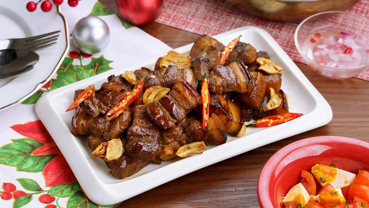
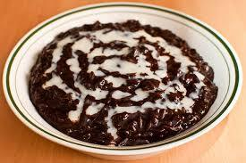

Recipes
Pork Adobo
Ingredients:Pork belly (1 kg, cut into chunks), soy sauce (1/2 cup), vinegar (1/3 cup), garlic (5 cloves, minced), onion (1, chopped, optional), bay leaves (2), whole black peppercorns (1 tsp), water (1 cup or as needed), sugar (1 tbsp, optional), cooking oil (2 tbsp), salt to taste.
Instructions: Marinate pork in soy sauce and garlic for 30 minutes; sauté onions (if using) in oil, add pork, and brown; pour in vinegar (without stirring), add bay leaves, black peppercorns, and water, then simmer for 45-60 minutes; add sugar (if desired) and salt to taste, reduce sauce to preferred consistency, then serve with rice.
Lechon Kawali

Ingredients: Pork belly (1 kg), salt (1 tbsp), pepper (1 tsp), bay leaves (2), water (enough to cover), cooking oil (for deep frying).
Instructions: Boil pork belly with salt, pepper, and bay leaves until tender; drain and let dry completely; chill for a few hours or overnight for crispier skin; heat oil and deep-fry until golden and crispy; drain excess oil, chop into pieces, and serve with dipping sauce.
Fried Chicken

Ingredients: Chicken pieces (1 kg), salt (1 tsp), pepper (1/2 tsp), garlic powder (1 tsp), paprika (1 tsp, optional), flour (1 cup), cornstarch (1/2 cup), eggs (2, beaten), cooking oil (for frying).
Instructions: Season chicken with salt, pepper, garlic powder, and paprika; coat with flour and cornstarch, dip in beaten eggs, then coat again with flour mixture; heat oil and deep-fry until golden brown and crispy; drain excess oil and serve hot.
Chicken Curry
Ingredients: Chicken (1 kg, cut into pieces), coconut milk (1 can or 400ml), curry powder (2 tbsp), garlic (3 cloves, minced), onion (1, chopped), ginger (1 thumb-sized, minced), potatoes (2, cubed), carrots (1, sliced), bell peppers (1, sliced), fish sauce or salt (to taste), cooking oil (2 tbsp), water (1/2 cup).
Instructions: Sauté garlic, onion, and ginger in oil; add chicken and cook until lightly browned; stir in curry powder and mix well; pour in coconut milk and water, then simmer for 15 minutes; add potatoes and carrots, cook until tender; add bell peppers and season with fish sauce or salt; simmer for a few more minutes, then serve hot with rice.
Beef Bulalo
Ingredients: Beef shank (1 kg), bone marrow bones (optional), water (enough to cover), onion (1, quartered), garlic (4 cloves, crushed), corn on the cob (2, cut into pieces), potatoes (2, cubed), cabbage (1/2 head, chopped), green beans (1 cup), fish sauce or salt (to taste), whole black peppercorns (1 tsp).
Instructions: Boil beef shank and bones in water, skimming off scum; add onion, garlic, and peppercorns, then simmer for 2-3 hours until beef is tender; add corn and potatoes, cook until tender; add cabbage and green beans, season with fish sauce or salt; simmer for a few more minutes, then serve hot with rice.
Beef Lumpia
Ingredients: Ground beef (500g), garlic (3 cloves, minced), onion (1, chopped), carrot (1, grated), soy sauce (2 tbsp), oyster sauce (1 tbsp, optional), egg (1, beaten), salt and pepper (to taste), lumpia wrappers, cooking oil (for frying).
Instructions: Mix ground beef, garlic, onion, carrot, soy sauce, oyster sauce, egg, salt, and pepper; place a small amount of filling on a lumpia wrapper, roll tightly, and seal edges with water; heat oil and deep-fry until golden brown and crispy; drain excess oil and serve with dipping sauce.
Empanada
Ingredients: For the dough: All-purpose flour (2 cups), butter (1/2 cup, cold and cubed), egg (1), cold water (1/4 cup), salt (1/2 tsp). For the filling: Ground meat (chicken, pork, or beef - 250g), garlic (2 cloves, minced), onion (1, chopped), potato (1, diced), carrot (1, diced), raisins (2 tbsp, optional), soy sauce (2 tbsp), salt and pepper (to taste), cooking oil (for frying).
Instructions: Mix flour and salt, cut in butter until crumbly, add egg and water, knead into dough, then chill; sauté garlic, onion, and meat until browned; add potatoes, carrots, soy sauce, salt, and pepper, then cook until tender; roll out dough, cut into circles, add filling, fold, and seal edges with a fork; deep-fry or bake until golden brown; serve warm.
Leche Flan
Ingredients: Egg yolks (10), condensed milk (1 can or 300ml), evaporated milk (1 can or 370ml), sugar (1/2 cup for caramel), vanilla extract (1 tsp).
Instructions: Melt sugar in a pan over low heat until golden caramel forms, then pour into a mold; mix egg yolks, condensed milk, evaporated milk, and vanilla until smooth; strain the mixture and pour over the caramel; cover with foil and steam for 30-40 minutes or bake in a water bath at 350°F (175°C) for 45-50 minutes; let cool, refrigerate, then invert onto a plate before serving.
Macaroni
Ingredients: Elbow macaroni (500g), ground beef or pork (250g), hotdogs (4, sliced), garlic (3 cloves, minced), onion (1, chopped), tomato sauce (2 cups), banana ketchup (1/2 cup), condensed milk (1/4 cup, optional), cheese (1 cup, grated), evaporated milk (1 cup), salt and pepper (to taste), cooking oil (2 tbsp).
Instructions: Cook macaroni according to package instructions; sauté garlic and onion in oil, add ground meat, and cook until browned; add hotdogs, tomato sauce, banana ketchup, and evaporated milk, then simmer for 10 minutes; season with salt and pepper, stir in condensed milk (if using); mix in cooked macaroni and top with cheese; serve warm.
Spaghetti
Ingredients: Spaghetti noodles (500g), ground beef or pork (250g), hotdogs (4, sliced), garlic (3 cloves, minced), onion (1, chopped), tomato sauce (2 cups), banana ketchup (1/2 cup), condensed milk (1/4 cup, optional), sugar (2 tbsp, optional), cheese (1 cup, grated), salt and pepper (to taste), cooking oil (2 tbsp).
Instructions: Cook spaghetti noodles according to package instructions; sauté garlic and onion in oil, add ground meat, and cook until browned; add hotdogs, tomato sauce, banana ketchup, condensed milk, and sugar (if using), then simmer for 10 minutes; season with salt and pepper; mix in cooked spaghetti and top with cheese; serve warm.
Champorado
Ingredients: Glutinous rice (1 cup), water (4 cups), cocoa powder (1/2 cup) or tablea (4 pieces), sugar (1/2 cup or to taste), condensed milk or evaporated milk (for topping).
Instructions: Boil water in a pot, add glutinous rice, and stir occasionally to prevent sticking; dissolve cocoa powder or tablea in a small amount of hot water, then add to the pot; simmer until rice is soft and mixture thickens; add sugar and mix well; serve hot with a drizzle of condensed or evaporated milk.
Bibingka
Ingredients: Rice flour (1 cup), all-purpose flour (1/2 cup), coconut milk (1 cup), evaporated milk (1/2 cup), sugar (1/2 cup), eggs (2), baking powder (1 tbsp), butter (2 tbsp, melted), banana leaves (for lining, optional), salted egg (1, sliced, optional), grated cheese (for topping), butter (for brushing).
Instructions: Preheat oven to 375°F (190°C) and line a baking pan with banana leaves; mix rice flour, all-purpose flour, sugar, and baking powder in a bowl; in another bowl, whisk eggs, coconut milk, evaporated milk, and melted butter; combine wet and dry ingredients until smooth; pour into the pan, top with salted egg slices (if using), and bake for 25-30 minutes; brush with butter, top with grated cheese, and serve warm.